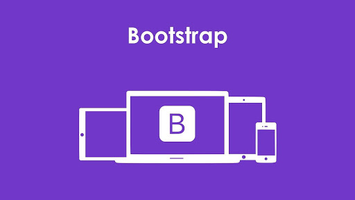

bootstrap is a free and open-source tool collection for
creating responsive websites and web applications.
It is the most popular HTML, CSS, and JavaScript framework for developing responsive,
mobile-first web sites. It solves many problems which we had once, one of which is the cross-browser
compatibility issue. Nowadays, the websites are perfect for all the browsers (IE, Firefox and Chrome) and
for all sizes of screens (Desktop, Tablets, Phablets, and Phones). All thanks to Bootstrap developers
-Mark Otto and Jacob Thornton of Twitter, though it was later declared to be an open-source project.